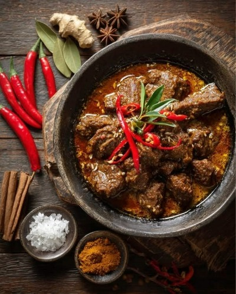
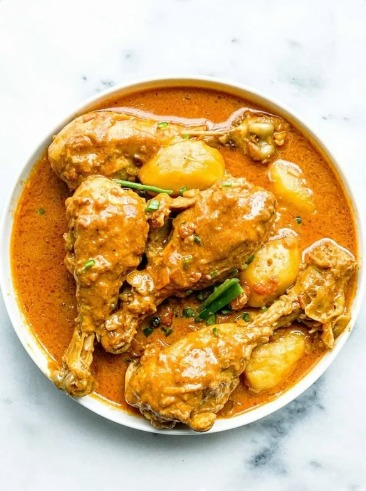
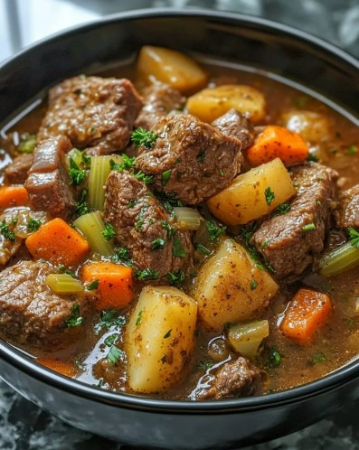
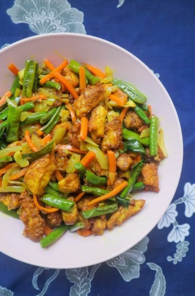
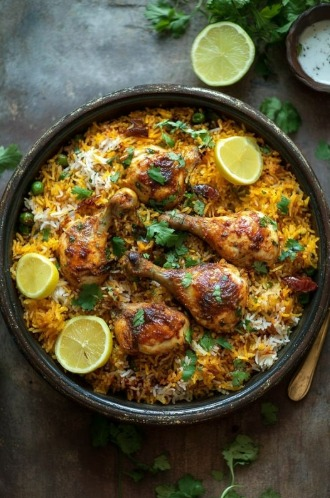
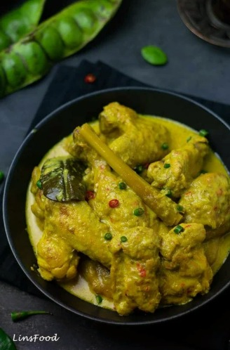
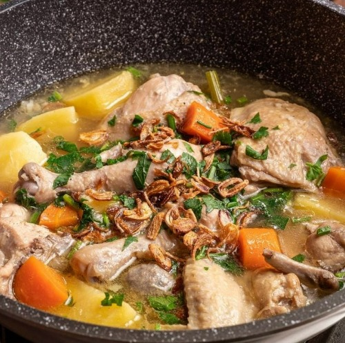
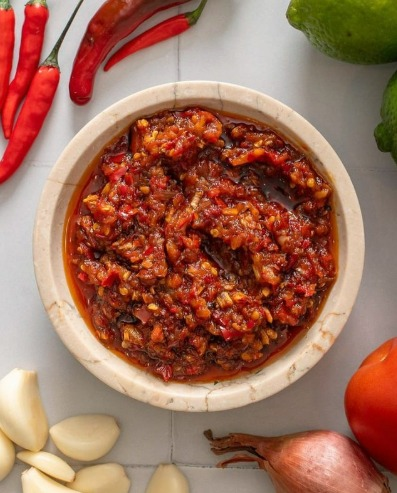
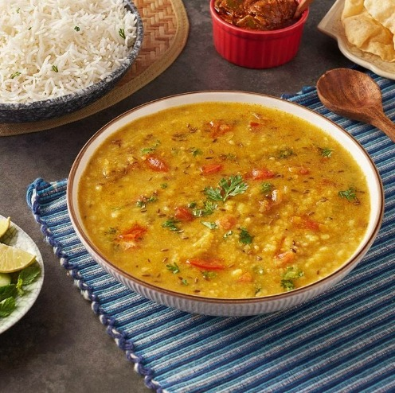

Functions of Malay foods

Star Anise
Enhances aroma and flavour in Malay dishes.
- Used in rendang and bone soup
- Used in Chinese five-spice powder

Cinnamon
Provides a warm and sweet flavour.
- Used in chicken curry, bubur lambuk, desserts
- Once valued higher than gold

Clove
Strong aroma that enhances savoury dishes.
- Used in nasi minyak and beef soup
- Natural mouth freshener

Turmeric
Adds colour and earthy flavour.
- Main ingredient in ayam masak kunyit
- Known for anti-inflammatory benefits

Cardamom
Sweet floral aroma for curries and drinks.
- Small green pods
- Soft and fragrant

Ginger
Adds spiciness and warmth.
- Used in teh halia and masak lemak cili api
- Boosts immunity

Lemongrass
Fresh citrus aroma.
- Used in tomyam and ikan bakar
- Can be used for herbal drinks

Garlic
Base ingredient for many dishes.
- Used in sambal tumis and soups
- Boosts heart health

Shallot
Adds sweetness and depth.
- Used in sambal and fish curry
- Essential base for Malay sauces

Cumin
Earthy and nutty flavour.
- Used in dal curry and rempah powder
- Aids digestion